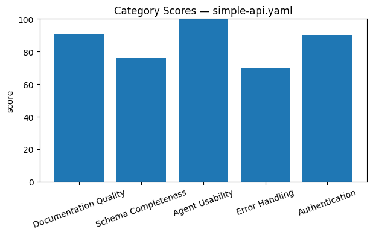
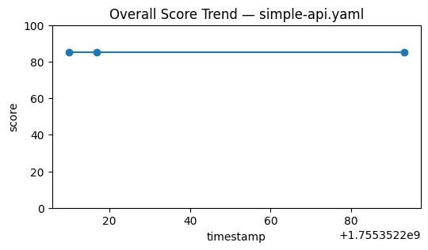

OpenAPI Quality Report — simple-api.yaml
Overall Score: 85/100
Category Scores
- Documentation Quality: 91
- Schema Completeness: 76
- Agent Usability: 100
- Error Handling: 70
- Authentication: 90
Visualization

Overall trend:

Baseline Comparison
- Documentation Quality:
PASS
(Δ=+1)
- Schema Completeness:
FAIL
(Δ=-9)
- Agent Usability:
PASS
(Δ=+10)
- Error Handling:
FAIL
(Δ=-10)
- Authentication:
PASS
(Δ=+10)
Notes: Error handling below baseline; add 4xx/5xx responses with schemas.
Issues
- Parameter 'userId' in GET /users/{userId} missing description
- Schema 'User' missing required fields or properties
- Schema 'CreateUserRequest' missing required fields or properties
- Schema 'Error' missing required fields or properties
- GET /users/{userId} missing description for discoverability
- POST /users missing 5xx error response
- GET /users/{userId} missing 4xx error response
- GET /users/{userId} missing 5xx error response
- Security scheme 'BearerAuth' missing description
- API documentation lacks authentication usage examples
Recommendations
- Add description and example for parameter 'userId'.
- Add required fields and properties to schema 'User'.
- Add required fields and properties to schema 'CreateUserRequest'.
- Add required fields and properties to schema 'Error'.
- Provide detailed description for GET /users/{userId}.
- Add 5xx error response for POST /users.
- Add 4xx error response for GET /users/{userId}.
- Add 5xx error response for GET /users/{userId}.
- Add description for 'BearerAuth' auth scheme.
- Add authentication usage examples in API description.